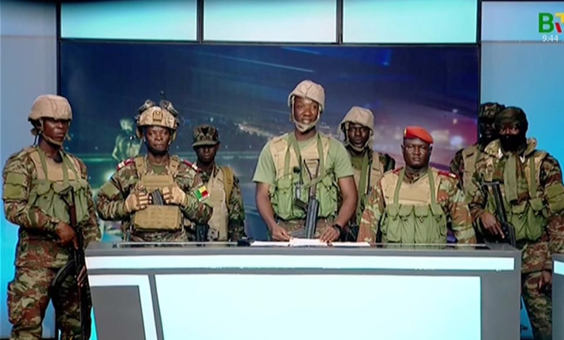

世界苦茶12月08日新闻 | 23条 | 香港首次引用国安条例88条拘捕

香港首次引用国安条例88条拘捕 | 大陆在台海域演练引争议 | 中日战机对峙加剧紧张 | 香港立法会选举前恫吓社会
苦茶数据
美元兑人民币：7.06（昨日7.06，前日7.06）
美元兑日元：155.06（昨日155.37，前日154.89）
上证指数：3927（昨日3902，前日3875)
标普500指数：休市（昨日6870，前日6857）
比特币：91070（昨日89567，前日89344）
布伦特原油：63.88（昨日63.75，前日63.24）
中国新闻
**• 香港立法会12月7日举行换届选举投票，投票率逼近歷史最低。 **
地区直选（选民总数413万）投票率31.9%，功能界别（选民总数19.2万）投票率40.1%。选前一日，驻港国家安全公署约谈部分外国新闻机构负责人和记者，认为其破坏了当前和衷共济、共克时艰的氛围，没有体恤灾民的痛苦和感受，伤害了香港市民的感情；希望其严格遵守有关法律规定，自我珍重，好自为之。截至12月3日警方完成所有大厦搜索，火灾已确认159人死亡，其中19具遗体未完成辨认，31人失联。（翻評：2021年是歷史最低，投票率30.2%，這次火災也沒有催出什麼票。）
• 香港首次引用《国安条例》第88条拘一男子。
香港警方首次以《维护国家安全条例》第88条拘捕当地一名71岁男子。据悉，这名男子是前民阵副召集人王岸然，他被指非法披露与国安人员的会面内容。综合《明报》、星岛日报和“香港01”报道，香港警务处国安处总警司李桂华星期六说，警方2日邀请涉案人到警署就一起危害国家安全案件协助调查，这名男子隔日在社交平台播出部分会面内容。据了解，被捕人是曾在《苹果日报》任职多年的时事评论员王岸然，曾多次参与“占中”及反高铁等示威活动。他日前接受调查会面后，即在他的YouTube频道上载片段，披露会面流程及提问内容等，片长近一小时。李桂华强调，负责案件的警员当时已清楚提醒有关《国安条例》第88条的要求。
• 大陆称首次在台浅滩海域演练 台海巡署：混淆位置认知作战。
中国大陆指星期六首次在台湾浅滩海域举行搜救应急演练，台湾海巡署反驳称，演练是在靠近大陆水域进行，此举混淆海域位置，是对台湾进行认知作战。中新社星期六晚发布图文报道，披露福建海事局联合交通运输部东海救助局当天举行首次台湾浅滩海域搜救应急演练。照片显示，参与行动的三艘船为“海巡06”和“海巡0802”两艘海巡船，以及“东海救115”远洋救助船。报道称，海事、救助船艇编队随后开展台湾海峡中部海域专项执法行动，对台湾浅滩以及台湾海峡中部、通航密集区、事故多发区等水域开展巡查。台湾《联合报》引述台湾海巡署星期天回应称，福建海事局三艘公务船是在台湾海峡中线以西。
• 中日战机对峙。
中日战机12月6日在日本冲绳岛东南方向的国际水域上空发生对峙，令目前僵持不下的中日关系雪上加霜。据日本国防部消息，12月6日下午4时32分至4时35分左右，一架从中国海军辽宁舰起飞的歼-15战斗机，在冲绳岛东南海域用雷达间歇照射一架正在进行防空识别任务的日本航空自卫队F-15战斗机，持续约三分钟。同日晚上6时37分至7时08分左右，歼-15战斗机又用雷达间歇照射另一架日本航空自卫队F-15战斗机，持续约30分钟。日本防长小泉进次郎12月7日凌晨2时召开紧急记者会，对中国战机用雷达照射日本战机表示深切遗憾和强烈抗议。
• 香港立法会选举日：廉政公署再拘4人，指涉煽惑他人不投票。
2025年12月7日在大埔宏福苑火灾的哀悼氛围中，第八届中国香港特区立法会选举于周日举行。当日，香港廉政公署拘捕4人，并通缉1人，称其涉嫌在社交平台留言贴文，煽惑他人不投票或投无效票。该公署表示，今次选举期间已先后拘捕共11人。周日早上，香港的选民前往投票站，开始选举新一届立法会议员。这是2021年3月中国全国人大常委会以确保“爱国者为主体的’港人治港’”等原则修改香港选举制度后，第二次立法会改选。
**• 河南三门峡，崤函大道下穿陇海铁路立交顶进工程12月6日在施工过程中发生边坡塌方，5名施工人员遇难。 **
印太新闻
• 台禁小红书反刺激下载量 跃升社交App榜首。
台湾宣布封锁中国大陆社媒平台小红书一年，反而吸引更多台湾人下载小红书，使小红书在台湾手机应用商店下载量激增。综合极目新闻和凤凰网报道，小红书在星期天登上台湾社交App热门下载榜第一，总榜排名跃升至第七。几天前，小红书的下载量排名还在几十名之外。许多台湾网民在小红书发贴称，家中长辈之前不太了解小红书，但最近也下载了小红书，台湾封禁反而宣传了小红书。截至星期天上午，台湾网民仍可正常下载使用小红书。有不少网民分享通过修改域名系统、模拟虚拟专用网等方法使用小红书的攻略。截至12月，小红书在台湾的用户超过300万人，相当于每八个台湾人中就有一人在使用。
• 印度果阿一夜总会火灾造成25名员工和游客死亡。
印度果阿一家夜总会火灾造成25名员工和游客死亡 印度海滨地区果阿一处热门夜总会发生火灾，当地官员称已致25人死亡。警方最初认为位于Birch夜总会厨房的燃气罐爆炸所致，但该地区首席部长周日表示，已排除此种可能，现认为室内烟花引发了大火。这家位于一处热门海滩附近的场所人满为患，聚集了前来听宝莱坞DJ演出的狂欢者。警方称，来自德里同一家庭的四名成员及21名员工遇难。包括夜总会经理在内的四人已被逮捕，夜总会老板也已被发出逮捕令。果阿曾为葡萄牙殖民地，濒临阿拉伯海，其夜生活、沙滩和度假胜地每年吸引数百万游客。
• 印尼毁灭性洪灾死亡人数已超过900人。
印度尼西亚毁灭性洪灾死亡人数已超过900人，数百人仍失踪。上周，一股罕见而强烈的气旋在马六甲海峡形成，给该东南亚国家部分地区带来倾盆大雨和山体滑坡，超过10万户房屋被毁。救援人员正继续设法到达仍被隔断的地区，有些地方的援助物资不得不空投。印度尼西亚的洪灾是近几周袭击亚洲的多起极端天气事件之一，斯里兰卡、泰国、马来西亚和越南的累计死亡人数接近2000人。（翻评：气候危机导致的真百年不遇的巨大洪水。）
• 巴厘岛考虑禁止爱彼迎以遏制旅游乱象。
巴厘岛正考虑禁止爱彼迎的住宿服务，这是该度假岛屿为恢复秩序所做的最新尝试，目前当地正艰难应对创纪录的旅游激增。巴厘岛省长科斯特向国家通讯社安塔拉表示，近年来爱彼迎式租赁住房激增，在外国游客暴增的同时侵蚀了酒店税收。报道援引他的话说，未注册别墅和宾馆的泛滥反过来阻碍了政府增加收入以资助公共服务的能力。巴厘岛，通常被称为印度尼西亚的 “天堂岛”，正在努力应对新冠疫情后，旅游热潮带来的后果，从令人头疼的交通拥堵到过度建设和环境破坏。近年来，爱彼迎作为更便宜、更受欢迎的替代选择，取代了遍布这座 400万人口岛屿的大型度假村和豪华酒店。
科技新闻
• 欧洲绿党呼吁冯德莱恩继续以罚款打击美国科技巨头。
对于来自美国官员和大型科技巨头的强烈抗议，欧洲委员会主席乌尔苏拉·冯德莱恩领导的欧盟委员会仍应以铁腕继续执行其数字规则，欧洲议会绿党共同主席巴斯·艾克豪特在接受POLITICO采访时表示。当来自全欧洲的绿党政治家在葡萄牙首都聚集参加年度大会之际，美国高级官员正抨击欧盟对社交媒体平台X因违反欧盟《数字服务法》下的透明义务而处以罚款——该法是该集团的内容审核规则手册。“他们就应该执行法律，这意味着他们需要更强硬，”艾克豪特在活动间隙对POLITICO说。他认为1.2亿欧元的罚款对亿万富翁埃隆·马斯克来说是“九牛一毛”，欧盟执行机构应该采取更进一步的行动。
经济新闻
• 马克龙表示，欧洲工业面临“生死攸关”，中国需要给予帮助。
法国总统埃马纽埃尔·马克龙表示，欧洲工业正面临“生死存亡”的时刻，夹在竞争异常激烈的中国和保护主义的美国之间——而北京应当通过长期欠缺的对外投资来援救欧洲。“中国人必须像25年前欧洲人对中国所做的那样，在欧洲进行投资，”马克龙在结束自2018年以来的第四次正式访华回国后对法国《回声报》表示。2024年，欧洲对中国的贸易逆差为3060亿欧元，出口约2130亿欧元，进口约5190亿欧元。
• 在旨在达成和平协议的会谈进行之际，中国企业正为俄罗斯重新开放做好准备。
许多中国出口商预计，战后俄国的首波需求将来自基础设施建设 中国跨境电商企业家安迪·郭刚在莫斯科郊区新开设了两处仓库，总面积达5000平方米。他表示，此举并非为了解决物流瓶颈，而是在为一种可能的地缘政治转变做准备：如果俄乌达成和平协议，将重塑他增长最快但最不确定的海外市场。“许多中国出口商现在都在密切关注并讨论是否能达成和平协议，”郭说。他也是微信商业平台Waimaojia的创始人，该平台吸引了数千名以俄罗斯市场为主的出口商。他表示，战争结束的前景为许多中国出口商带来了机遇与不确定性。
• 土地紧缺的深圳迁移大型垃圾填埋场以腾出更多空间。
在用地稀缺的城市中心，卡车每天清运6000立方米垃圾，以腾出30公顷宝贵土地 深圳罗湖区靠近香港边界的一处填埋场中，正在全力搬运并净化被埋埋数十年的超过255万立方米废弃物。该项工程投资人民币21.7亿元，将腾出并改造目前被城市和建筑垃圾占用的土地，拟用于安置人工智能服务器、生物科技实验室以及面向现代制造业的艺术与设计工作室，市政府如此表示。拥有腾讯、华为、比亚迪和大疆等科技巨头的深圳，面积约2000平方公里，不到上海的三分之一，仅为北京的12%。但这座拥有1800万人口的城市去年地区生产总值达3.68万亿元，在大陆城市中排名第三，土地紧张正在制约其进一步发展。
俄乌战争
• 中俄时隔八年举办反导联合演习。
中俄两军在俄罗斯境内举行第三次反导联合演习，这是两国时隔八年再次举行同类演习。中国国防部星期六晚间在网站发布消息称，此次演习于本月上旬举行，联演不针对第三方，与当前国际和地区局势无关。中俄两军曾在2016年5月和2017年12月举行反导联合演习。和前两次联演相比，第三次演习是在结束后才对外公布信息，新闻稿内容也最简短。
• 关闭美国反腐监督机构的总统之子抨击乌克兰腐败。
美国总统唐纳德·特朗普的儿子小唐纳德·特朗普于12月7日表示，如果基辅不与俄罗斯达成和平协议，他的父亲可能会放弃乌克兰，并抨击乌克兰存在腐败。小特朗普的言论正值其父亲最新一轮推动结束乌克兰战争的外交努力以及基辅爆发的重大腐败丑闻之际——该丑闻已导致包括总统办公室前负责人安德烈·耶尔马克在内的多名高层官员辞职。虽然小特朗普在美国政府中没有官方职务，据报道他曾与特使史蒂夫·威特科夫一道参与与乌克兰政客的非正式渠道会谈。他也多次抨击美国对基辅的支持，有时甚至采用克里姆林宫的论调。
• 捷克总统称欧洲可能需要击落侵犯北约空域的俄罗斯飞机和无人机。
捷克总统表示，如果莫斯科继续试探北约的决心，欧洲可能需要击落侵犯北约空域的俄机和无人机。捷克总统彼得·帕维尔在伦敦《星期日泰晤士报》12月7日发表的一次采访中表示：“我认为会有那么一个时刻，如果这些侵犯行为继续，我们将不得不采取更强硬的措施，可能包括击落俄罗斯的飞机或无人机。”帕维尔对该报说：“俄罗斯不会允许其领空反复遭到侵犯。我们也必须如此。（翻評：唉，可惜捷克政壇已經極右翼化，變天了。）
• 在过去一天里，俄罗斯在乌克兰的袭击造成至少2人死亡、19人受伤。
当地当局12月7日报道，过去24小时内俄罗斯对乌克兰的袭击已致至少2人死亡，19人受伤。空军称，俄罗斯在夜间发射了5枚弹道导弹和241架无人机。乌克兰防空系统拦截了175架无人机，2枚Kh-47M2“飞刀”空射弹道导弹和2枚“伊斯坎德尔-M”/KN-23弹道导弹。空军称有65架无人机突破防空，袭击了14处目标。顿涅茨克州州长瓦迪姆·菲拉什金称，俄军袭击造成该州1人死亡，11人受伤。伤亡最多的斯洛维扬斯克市有1人死亡，8人受伤，另有7栋高层建筑，12栋房屋，3处非住宅场所和6辆汽车受损。
• 凯洛格称乌克兰和平协议接近达成，顿涅茨克和扎波罗热等是关键争议点。
美国总统特朗普驻乌克兰特别代表基思·凯洛格表示，一项结束俄罗斯对乌克兰战争的和平协议似乎即将达成，将谈判比作战场推进的最后冲刺，欧洲自由电台乌克兰语服务12月7日报道。凯洛格在12月6日于加利福尼亚举行的罗纳德·里根国家防务论坛上说，“离目标最后的十米总是最难的”，目前关于顿涅茨克州控制权和俄罗斯占领的扎波罗热核电站的谈判，代表了结束冲突努力的最后阶段，欧洲自由电台乌克兰语服务报道。（翻評：Kellog還在？）
世界新闻
• 美国称委内瑞拉一名反对派人士在押期间死亡“卑劣”。
美国称委内瑞拉反对派人物在押身亡“卑鄙” 美国批评委内瑞拉政府，称一名反对派人物在押身亡一事“提醒人们尼古拉斯·马杜罗政权的卑鄙本质”。人权组织和反对派团体表示，阿尔弗雷多·迪亚斯在加拉加斯的埃尔·埃利科伊德监狱的牢房中死亡，此前他在该狱被关押已逾一年。委内瑞拉政府表示，这位56岁男子出现心脏病发作迹象并被送往医院，周六在医院死亡。美国的介入是特朗普政府与马杜罗之间口水战升级的最新一幕，马杜罗曾指责美方企图改变政权。
• 关键共和党参议员表示，他不反对公布那段导致两名幸存者丧生的袭击视频。
一位关键的共和党参议员称，他对公布一段造成两名幸存者死亡的空袭视频没有异议 一段展示美国军方在加勒比海对一艘疑似毒品船发动打击并导致两名幸存者死亡的视频“并无特别之处”，负责参议院情报委员会的共和党人周日表示，如果五角大楼将其解密，他不会反对对外公布。支持特朗普总统打击疑似毒品走私者行动的阿肯色州参议员汤姆·科顿在是否公布9月2日这次袭击的视频上，在一定程度上与特朗普和一些顶级民主党人站在同一阵线。这起袭击是政府所说针对从委内瑞拉附近运毒船只的数月来一系列美军打击行动的首次。已知的22起打击中至少造成87人死亡。
• 内塔尼亚胡表示，以色列和哈马斯将很快开始加沙停火的第二阶段。
以色列总理内塔尼亚胡周日表示，以色列和哈马斯“很快将进入停火的第二阶段”，此前哈马斯将归还最后一名被扣人质的遗体。内塔尼亚胡在与来访的德国总理弗里德里希·梅尔茨的新闻发布会上表示，第二阶段涉及解除哈马斯武装和以色列军队撤出加沙，最早可能在本月底开始。哈马斯尚未交出兰·格维利的遗体，他是一名在哈马斯于2023年10月7日发动的袭击中被杀的24岁警官，遗体被带往加沙。停火的第二阶段还包括部署一支国际部队以保障加沙安全，并组建一个临时巴勒斯坦政府在由美国总统唐纳德·特朗普领导的国际理事会监督下负责日常事务。一名哈马斯高级官员周日对美联社表示，该组织愿意就“冻结，存放或放下”武器进行讨论。
• 欧洲的民粹主义右翼称赞特朗普团队抨击欧盟。
欧洲极右翼煽动者争相把自己的命运绑在华盛顿对布鲁塞尔新一轮斗争的战车上。美国高级政府官员，包括副总统JD·范斯和国务卿马尔科·鲁比奥，纷纷抨击他们所谓的欧盟“审查”以及在欧盟委员会对社交媒体平台X处以1.2亿欧元罚款后对美国科技公司的“攻击”。该罚款系因违反欧盟“数字服务法”下的透明义务——该法是欧盟的内容审核规则手册。匈牙利总理维克托·欧尔班周六在X上表示：“委员会对X的攻击说明了一切。当布鲁塞尔当权者无法在辩论中取胜时，他们就动用罚款。欧洲需要言论自由，而不是由未选举产生的官僚决定我们能读什么或说什么。